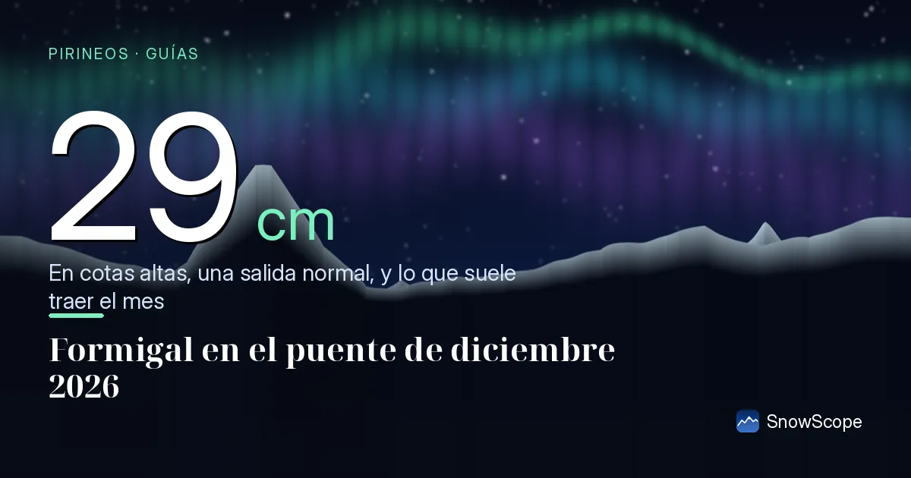

Formigal en el puente de diciembre 2026: 29 cm en cotas altas, una salida normal, y lo que suele traer el mes
Formigal llega al puente de diciembre con 29 cm en las pistas altas de Anayet y Portalet y 16 cm a 1.883 m, a media estación, exactamente el valor normal de un 28 de noviembre. Ni mejor ni peor que la media. Lo que viene después depende de diciembre: a esa cota lo normal son 24 cm el 8 de diciembre, 39 cm el día de Navidad, y el medio metro llega antes de Año Nuevo en 46 % de 46 inviernos.
Consulta la previsión de nieve en tiempo real de Formigal en la app SnowScopeEspesor de nieve, alertas de nieve polvo y mapa 3D, gratis.
La nieve de hoy y la semana
El jueves cayeron 7 cm, el resto de la semana ha sido seco; en siete días, 51 cm. El domingo llegan unos 3 cm más y luego vuelve el tiempo seco: 3 cm hasta el martes y apenas 1 cm en siete días en las cotas altas. Las noches frías permiten a los cañones trabajar en Sextas y en los retornos a Formigal, que es lo que de verdad abre pistas en la primera quincena.
El dominio sube de 1.502 m en Sextas hasta 2.264 m en los Tres Hombres; con 104 km de pistas es el más grande de España, y en diciembre abre por sectores según la nieve.
| Pistas altas | A 1.883 m | |
|---|---|---|
| Hoy | 29 cm | 16 cm |
| Normal 28 de noviembre | 16 cm | |
| Normal 8 de diciembre | 24 cm | |
| Normal 15 de diciembre | 24 cm | |
| Normal 25 de diciembre | 39 cm | |
| Normal 1 de enero | 47 cm |
Diciembre semana a semana en 46 inviernos
La tabla resume el recorrido normal a 1.883 m: 24 cm el 8 de diciembre, 24 cm el 15, 32 cm el 20, 39 cm el 25 y 47 cm el 1 de enero. Diciembre suma de media 30 cm a esa cota. Un invierno de cada cuatro tiene menos de 17 cm en Navidad; uno de cada cuatro, más de 59 cm.
El medio metro estaba superado el 15 de diciembre en 26 % de los inviernos y el 1 de enero en 46 %. El invierno más generoso, 2012-13, llegó a 216 cm; el más pobre, 1989-90, a 51 cm. El máximo llega a principios de marzo, en torno a 83 cm.
Qué esperar en el puente
Del 5 al 8 de diciembre Formigal suele esquiarse en Sextas y Anayet con nieve producida y lo que haya dejado el principio del mes; Portalet y Sarrios esperan a la primera gran nevada. Este año la base natural es la de un año normal, así que el puente dependerá de los cañones y de que no llegue un episodio de lluvia.
Panticosa, en el mismo forfait, está por encima de su media y tiene nieve en sus pistas altas; es la alternativa tranquila del valle en el puente. La página de nieve de Formigal muestra cada día la nieve en la base, a media estación y en cotas altas.
Preguntas frecuentes
¿Habrá nieve en el puente de diciembre en Formigal? Lo normal es que sí, en los sectores con cañones; todo el dominio abierto en el puente es la excepción, no la regla.
¿Es un mal comienzo de temporada? No, es un comienzo medio: a 1.883 m hay justo lo normal. Dos semanas normales de diciembre lo dejan en la senda de la Navidad.
¿Cuándo hay más nieve en Formigal? En febrero y marzo, con 84 cm y 83 cm de media. Las Navidades son el principio de la temporada buena, no su cumbre.
Consejos para esquiadores
- Para el puente, reservad pensando en Sextas y Anayet; dejad Portalet y Sarrios para la primera nevada grande.
- Mirad Panticosa el día de más gente: está por encima de su media y sin colas.
- Comparad con Baqueira en nuestro parte de Baqueira para el puente y con el resto de estaciones en la página España.
- Planificad las fechas con el planificador de viaje.
Sobre estas cifras
Cifras de nieve: el mapa y la previsión de SnowScope de hoy y nuestro histórico de 46 inviernos pasados en cada estación (una estimación para la zona, no el parte de la estación).
Boletines oficiales de aludes: AEMET – Boletín de peligro de aludes (Pirineo aragonés)
Citar este informe
Para investigación, docencia o prensa: cifras y gráficos reutilizables libremente bajo CC BY 4.0 con esta cita.
SnowScope (2026), Formigal en el puente de diciembre 2026: 29 cm en cotas altas, una salida normal, y lo que suele traer el mes, https://snowscope.app/blog/es/2026/11/formigal-puente-de-diciembre-2026-nieve-hoy-y-lo-que-trae-el-mes-en-46-inviernos.html, consultado el 2026-11-28
SnowScope (Atlas Labs). (2026, November 28). Formigal en el puente de diciembre 2026: 29 cm en cotas altas, una salida normal, y lo que suele traer el mes. SnowScope snow reports. https://snowscope.app/blog/es/2026/11/formigal-puente-de-diciembre-2026-nieve-hoy-y-lo-que-trae-el-mes-en-46-inviernos.html
BibTeX
@misc{snowscope2026formigalpuentedediciembr,
author = {{SnowScope (Atlas Labs)}},
title = {Formigal en el puente de diciembre 2026: 29 cm en cotas altas, una salida normal, y lo que suele traer el mes},
year = {2026},
month = nov,
howpublished = {\url{https://snowscope.app/blog/es/2026/11/formigal-puente-de-diciembre-2026-nieve-hoy-y-lo-que-trae-el-mes-en-46-inviernos.html}},
note = {Published 2026-11-28 13:43 UTC; accessed 2026-11-28}
}· CC BY 4.0 · Métodos, datos y herramientas →
Formigal: nieve y temperatura según la altura, este invierno vs el pasado (herramientas) →
Sigue Formigal
Gratis: un aviso cuando llega la nieve y la previsión cada mañana.